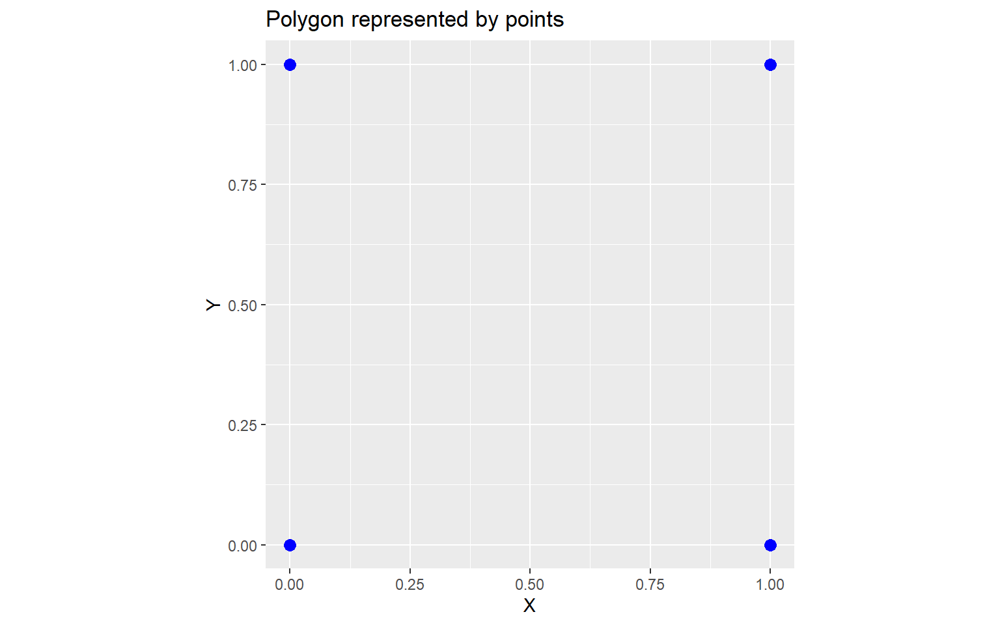
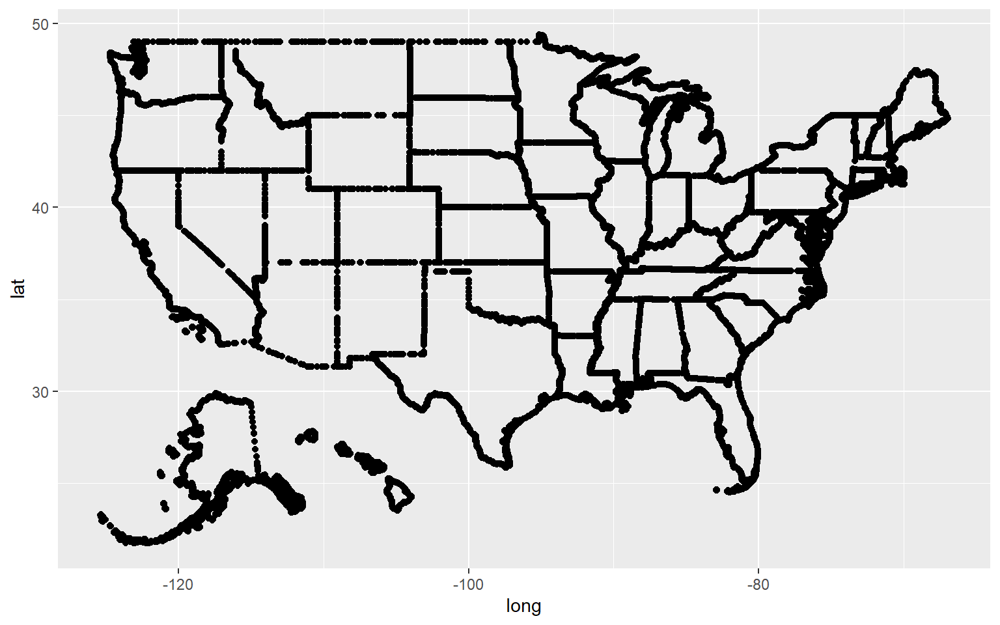
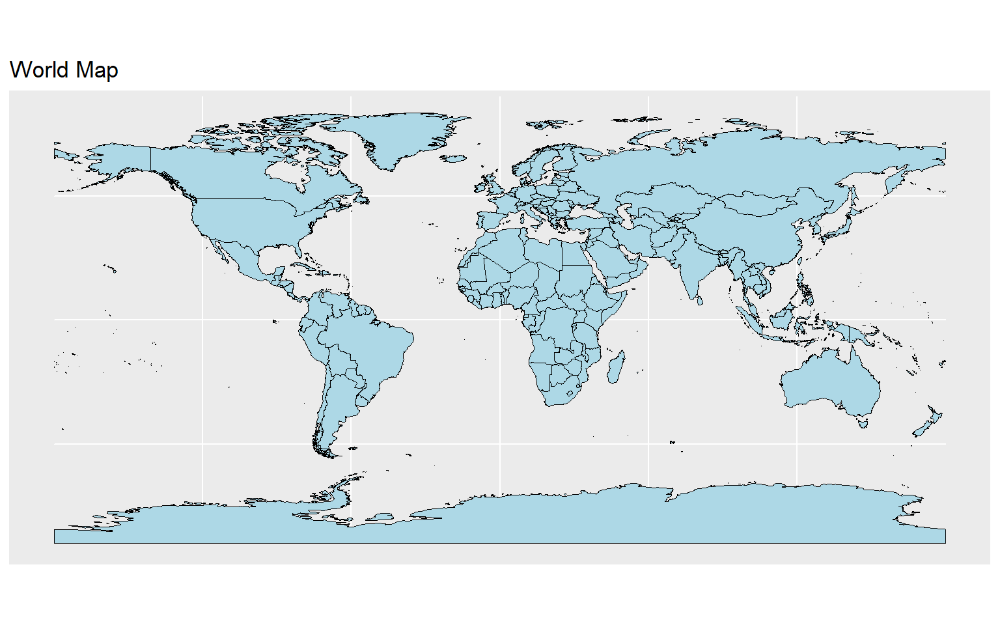

6 Spatial Data Visualisation
6.1 R packages for spatial data analysis
rgdal
sp
rgeos
raster
sf
tmap
leaflet
ggmap
maptools
gstat
spatstat
stars
geosphere
RgoogleMaps
rasterVis
6.2 Geospatial vector data structures
-
Point: Individual longitude and latitude of locations
Eg: Locations, Buildings
-
Lines: Two or more vertices or points that are connected
Eg: Roads, rivers
-
Polygons: Three or more vertices and closed
Eg: Area of a country, state, district
6.3 Challenge in Spatial Data Viualisation
Move from

to
How to transform this three dimensional angular system to a two dimensional cartesian system?
Solution: Spatial Projections
6.4 Map Projection
A projection is about the geometric transformation from 3D to 2D.
A map projection is a method or mathematical formula to represent the curved surface of the Earth on a flat map.
It focuses on how the Earth’s surface is “flattened”, which always introduces some distortion in area, shape, distance, or direction.
Examples:
Mercator (preserves direction)
Albers Equal-Area Conic (preserves area)
Goode Homolosine (minimizes distortion globally)
6.5 Types of Map Projections
Cylindrical Projections
Imagine wrapping a cylinder around the Earth and projecting the surface onto it.
Characteristics:
Meridians and parallels are straight and perpendicular.
Distortion increases away from the equator.
Example:
Mercator Projection – preserves direction, but greatly distorts area near the poles.
Conical Projections
Imagine wrapping a cone over the Earth, usually touching at one or two standard parallels.
Characteristics:
Parallels appear as arcs; meridians converge toward a point.
Best for mid-latitude regions with an east–west extent.
Example:
Albers Equal-Area Conic – preserves area, commonly used for countries or regions.
Planar (Azimuthal) Projections
The Earth’s surface is projected onto a flat plane, usually touching at a single point.
Characteristics:
Distortion increases outward from the point of tangency.
Can preserve distance, area, or shape depending on the type.
Example:
Goode Homolosine – minimizes global distortion by combining multiple projection methods.
Visit here to see the visual illustration.
6.6 Example maps
library(tidyverse)
library(sf)
library(rnaturalearth)
library(rnaturalearthdata)
#https://r-spatial.org/r/2018/10/25/ggplot2-sf.html
world <- ne_countries(scale = "medium", returnclass = "sf")
p1 <- ggplot(data = world)+
geom_sf()+
labs(title = 'ESRI:54030: Robinson projection')+ theme(plot.title = element_text(face = "bold"))+
coord_sf(crs = st_crs("ESRI:54030"))p2 <- ggplot(data = world)+
geom_sf()+
labs(title = 'ESRI:54009: Mollweide projection')+ theme(plot.title = element_text(face = "bold"))+
coord_sf(crs = st_crs("ESRI:54009"))
p3 <- ggplot(data = world)+
geom_sf()+
labs(title = 'ESRI:54002: Equidistant cylindrical projection')+ theme(plot.title = element_text(face = "bold"))+
coord_sf(crs = st_crs("ESRI:54002"))
p4 <- ggplot(data = world)+
geom_sf()+
labs(title = 'ESRI:54008: Sinusoidal projection')+ theme(plot.title = element_text(face = "bold"))+
coord_sf(crs = st_crs("ESRI:54008"))p1
p2
p3
p4
6.7 Why Multiple Map Projection Types Exist
The Earth is round, but maps are flat. Because no flat map can perfectly preserve all properties of the globe, every projection introduces some distortion. Different projections are therefore designed to preserve certain properties depending on the map’s purpose.
Key Reasons for Multiple Projection Types
- Different Types of Distortion
Shape (conformal) – keeps angles and shapes correct (e.g., Mercator).
Area (equal-area / equivalent) – keeps relative sizes correct (e.g., Albers Equal-Area Conic).
Distance (equidistant) – preserves distances from a point or along certain lines (e.g., Azimuthal Equidistant).
Direction (azimuthal / navigational) – preserves angles and compass bearings (e.g., Mercator for navigation).
- Geographical Focus
Some projections are better for global maps, others for regional or local maps.
Example: Conical projections work well for mid-latitude countries, while planar projections work for polar regions.
- Practical Applications
Navigation – need accurate direction → Mercator.
Thematic / statistical maps – need accurate area → Albers Equal-Area.
Minimizing overall distortion – Goode Homolosine for global thematic maps.
6.8 Quick Comparison Table
In-class
6.9 Coordinate Reference System (CRS)
A CRS is a complete spatial reference framework that defines:
-
How coordinates relate to the Earth (datum)
A datum defines the mathematical Earth model and reference point for coordinates, ensuring that latitude, longitude, and height correspond to real positions on the Earth.)
The map projection used (if any)
6.10 What is a Datum?
A datum is a mathematical model of the Earth that defines:
The size and shape of the Earth (ellipsoid or spheroid)
The origin and orientation of the coordinate system (where latitude 0°, longitude 0° are defined)
In short, a datum tells us where “zero” is and how the coordinates are measured on the Earth’s surface.
6.11 Why is a Datum Important?
Different datums model the Earth slightly differently, so the same latitude/longitude may correspond to different locations depending on the datum.
Example:
WGS84 → used by GPS
NAD83 → used in North America
A coordinate of 40°N, 75°W will be slightly different on WGS84 vs NAD83 because the reference ellipsoid is slightly shifted.
6.12 Projection vs CRS
Projection = method to flatten the Earth
CRS = full system that defines the Earth model + projection + coordinate rules
6.13 Shapefile
A shapefile is a popular geospatial vector data format used to store geographic features like points, lines, and polygons, along with their attributes. It’s commonly used in GIS (Geographic Information Systems) and mapping software, including R (sf or rgdal packages).
A shapefile actually consists of several files that work together. The main ones are:
| File Extension | Purpose |
|---|---|
| .shp | Geometry of features (points, lines, polygons) |
| .shx | Shape index (helps software find features quickly) |
| .dbf | Attribute data (like a spreadsheet) |
| .prj | Projection information (coordinate reference system) |
| .cpg | Encoding of text attributes (optional) |
6.14 R Example 1
library(sf)
library(rnaturalearth)
# Read shapefile
world <- ne_countries(scale = "medium", returnclass = "sf")
head(world)Simple feature collection with 6 features and 168 fields
Geometry type: MULTIPOLYGON
Dimension: XY
Bounding box: xmin: -73.36621 ymin: -22.40205 xmax: 109.4449 ymax: 41.9062
Geodetic CRS: WGS 84
featurecla scalerank labelrank sovereignt sov_a3 adm0_dif level
1 Admin-0 country 1 3 Zimbabwe ZWE 0 2
2 Admin-0 country 1 3 Zambia ZMB 0 2
3 Admin-0 country 1 3 Yemen YEM 0 2
4 Admin-0 country 3 2 Vietnam VNM 0 2
5 Admin-0 country 5 3 Venezuela VEN 0 2
6 Admin-0 country 6 6 Vatican VAT 0 2
type tlc admin adm0_a3 geou_dif geounit gu_a3 su_dif
1 Sovereign country 1 Zimbabwe ZWE 0 Zimbabwe ZWE 0
2 Sovereign country 1 Zambia ZMB 0 Zambia ZMB 0
3 Sovereign country 1 Yemen YEM 0 Yemen YEM 0
4 Sovereign country 1 Vietnam VNM 0 Vietnam VNM 0
5 Sovereign country 1 Venezuela VEN 0 Venezuela VEN 0
6 Sovereign country 1 Vatican VAT 0 Vatican VAT 0
subunit su_a3 brk_diff name name_long brk_a3 brk_name brk_group
1 Zimbabwe ZWE 0 Zimbabwe Zimbabwe ZWE Zimbabwe <NA>
2 Zambia ZMB 0 Zambia Zambia ZMB Zambia <NA>
3 Yemen YEM 0 Yemen Yemen YEM Yemen <NA>
4 Vietnam VNM 0 Vietnam Vietnam VNM Vietnam <NA>
5 Venezuela VEN 0 Venezuela Venezuela VEN Venezuela <NA>
6 Vatican VAT 0 Vatican Vatican VAT Vatican <NA>
abbrev postal formal_en
1 Zimb. ZW Republic of Zimbabwe
2 Zambia ZM Republic of Zambia
3 Yem. YE Republic of Yemen
4 Viet. VN Socialist Republic of Vietnam
5 Ven. VE Bolivarian Republic of Venezuela
6 Vat. V State of the Vatican City
formal_fr name_ciawf note_adm0 note_brk
1 <NA> Zimbabwe <NA> <NA>
2 <NA> Zambia <NA> <NA>
3 <NA> Yemen <NA> <NA>
4 <NA> Vietnam <NA> <NA>
5 República Bolivariana de Venezuela Venezuela <NA> <NA>
6 <NA> Holy See (Vatican City) <NA> <NA>
name_sort name_alt mapcolor7 mapcolor8 mapcolor9 mapcolor13 pop_est
1 Zimbabwe <NA> 1 5 3 9 14645468
2 Zambia <NA> 5 8 5 13 17861030
3 Yemen, Rep. <NA> 5 3 3 11 29161922
4 Vietnam <NA> 5 6 5 4 96462106
5 Venezuela, RB <NA> 1 3 1 4 28515829
6 Vatican (Holy See) Holy See 1 3 4 2 825
pop_rank pop_year gdp_md gdp_year economy
1 14 2019 21440 2019 5. Emerging region: G20
2 14 2019 23309 2019 7. Least developed region
3 15 2019 22581 2019 7. Least developed region
4 16 2019 261921 2019 5. Emerging region: G20
5 15 2019 482359 2014 5. Emerging region: G20
6 2 2019 -99 2019 2. Developed region: nonG7
income_grp fips_10 iso_a2 iso_a2_eh iso_a3 iso_a3_eh iso_n3
1 5. Low income ZI ZW ZW ZWE ZWE 716
2 4. Lower middle income ZA ZM ZM ZMB ZMB 894
3 4. Lower middle income YM YE YE YEM YEM 887
4 4. Lower middle income VM VN VN VNM VNM 704
5 3. Upper middle income VE VE VE VEN VEN 862
6 2. High income: nonOECD VT VA VA VAT VAT 336
iso_n3_eh un_a3 wb_a2 wb_a3 woe_id woe_id_eh woe_note
1 716 716 ZW ZWE 23425004 23425004 Exact WOE match as country
2 894 894 ZM ZMB 23425003 23425003 Exact WOE match as country
3 887 887 RY YEM 23425002 23425002 Exact WOE match as country
4 704 704 VN VNM 23424984 23424984 Exact WOE match as country
5 862 862 VE VEN 23424982 23424982 Exact WOE match as country
6 336 336 -99 -99 23424986 23424986 Exact WOE match as country
adm0_iso adm0_diff adm0_tlc adm0_a3_us adm0_a3_fr adm0_a3_ru adm0_a3_es
1 ZWE <NA> ZWE ZWE ZWE ZWE ZWE
2 ZMB <NA> ZMB ZMB ZMB ZMB ZMB
3 YEM <NA> YEM YEM YEM YEM YEM
4 VNM <NA> VNM VNM VNM VNM VNM
5 VEN <NA> VEN VEN VEN VEN VEN
6 VAT <NA> VAT VAT VAT VAT VAT
adm0_a3_cn adm0_a3_tw adm0_a3_in adm0_a3_np adm0_a3_pk adm0_a3_de adm0_a3_gb
1 ZWE ZWE ZWE ZWE ZWE ZWE ZWE
2 ZMB ZMB ZMB ZMB ZMB ZMB ZMB
3 YEM YEM YEM YEM YEM YEM YEM
4 VNM VNM VNM VNM VNM VNM VNM
5 VEN VEN VEN VEN VEN VEN VEN
6 VAT VAT VAT VAT VAT VAT VAT
adm0_a3_br adm0_a3_il adm0_a3_ps adm0_a3_sa adm0_a3_eg adm0_a3_ma adm0_a3_pt
1 ZWE ZWE ZWE ZWE ZWE ZWE ZWE
2 ZMB ZMB ZMB ZMB ZMB ZMB ZMB
3 YEM YEM YEM YEM YEM YEM YEM
4 VNM VNM VNM VNM VNM VNM VNM
5 VEN VEN VEN VEN VEN VEN VEN
6 VAT VAT VAT VAT VAT VAT VAT
adm0_a3_ar adm0_a3_jp adm0_a3_ko adm0_a3_vn adm0_a3_tr adm0_a3_id adm0_a3_pl
1 ZWE ZWE ZWE ZWE ZWE ZWE ZWE
2 ZMB ZMB ZMB ZMB ZMB ZMB ZMB
3 YEM YEM YEM YEM YEM YEM YEM
4 VNM VNM VNM VNM VNM VNM VNM
5 VEN VEN VEN VEN VEN VEN VEN
6 VAT VAT VAT VAT VAT VAT VAT
adm0_a3_gr adm0_a3_it adm0_a3_nl adm0_a3_se adm0_a3_bd adm0_a3_ua adm0_a3_un
1 ZWE ZWE ZWE ZWE ZWE ZWE -99
2 ZMB ZMB ZMB ZMB ZMB ZMB -99
3 YEM YEM YEM YEM YEM YEM -99
4 VNM VNM VNM VNM VNM VNM -99
5 VEN VEN VEN VEN VEN VEN -99
6 VAT VAT VAT VAT VAT VAT -99
adm0_a3_wb continent region_un subregion
1 -99 Africa Africa Eastern Africa
2 -99 Africa Africa Eastern Africa
3 -99 Asia Asia Western Asia
4 -99 Asia Asia South-Eastern Asia
5 -99 South America Americas South America
6 -99 Europe Europe Southern Europe
region_wb name_len long_len abbrev_len tiny homepart
1 Sub-Saharan Africa 8 8 5 -99 1
2 Sub-Saharan Africa 6 6 6 -99 1
3 Middle East & North Africa 5 5 4 -99 1
4 East Asia & Pacific 7 7 5 2 1
5 Latin America & Caribbean 9 9 4 -99 1
6 Europe & Central Asia 7 7 4 4 1
min_zoom min_label max_label label_x label_y ne_id wikidataid
1 0 2.5 8.0 29.92544 -18.911640 1159321441 Q954
2 0 3.0 8.0 26.39530 -14.660804 1159321439 Q953
3 0 3.0 8.0 45.87438 15.328226 1159321425 Q805
4 0 2.0 7.0 105.38729 21.715416 1159321417 Q881
5 0 2.5 7.5 -64.59938 7.182476 1159321411 Q717
6 0 5.0 10.0 12.45342 41.903323 1159321407 Q237
name_ar name_bn name_de name_en name_es
1 زيمبابوي জিম্বাবুয়ে Simbabwe Zimbabwe Zimbabue
2 زامبيا জাম্বিয়া Sambia Zambia Zambia
3 اليمن ইয়েমেন Jemen Yemen Yemen
4 فيتنام ভিয়েতনাম Vietnam Vietnam Vietnam
5 فنزويلا ভেনেজুয়েলা Venezuela Venezuela Venezuela
6 الفاتيكان ভ্যাটিকান সিটি Vatikanstadt Vatican City Ciudad del Vaticano
name_fa name_fr name_el name_he name_hi name_hu
1 زیمبابوه Zimbabwe Ζιμπάμπουε זימבבואה ज़िम्बाब्वे Zimbabwe
2 زامبیا Zambie Ζάμπια זמביה ज़ाम्बिया Zambia
3 یمن Yémen Υεμένη תימן यमन Jemen
4 ویتنام Viêt Nam Βιετνάμ וייטנאם वियतनाम Vietnám
5 ونزوئلا Venezuela Βενεζουέλα ונצואלה वेनेज़ुएला Venezuela
6 واتیکان Cité du Vatican Βατικανό קריית הוותיקן वैटिकन नगर Vatikán
name_id name_it name_ja name_ko name_nl name_pl
1 Zimbabwe Zimbabwe ジンバブエ 짐바브웨 Zimbabwe Zimbabwe
2 Zambia Zambia ザンビア 잠비아 Zambia Zambia
3 Yaman Yemen イエメン 예멘 Jemen Jemen
4 Vietnam Vietnam ベトナム 베트남 Vietnam Wietnam
5 Venezuela Venezuela ベネズエラ 베네수엘라 Venezuela Wenezuela
6 Vatikan Città del Vaticano バチカン 바티칸 시국 Vaticaanstad Watykan
name_pt name_ru name_sv name_tr name_uk name_ur
1 Zimbábue Зимбабве Zimbabwe Zimbabve Зімбабве زمبابوے
2 Zâmbia Замбия Zambia Zambiya Замбія زیمبیا
3 Iémen Йемен Jemen Yemen Ємен یمن
4 Vietname Вьетнам Vietnam Vietnam В'єтнам ویتنام
5 Venezuela Венесуэла Venezuela Venezuela Венесуела وینیزویلا
6 Vaticano Ватикан Vatikanstaten Vatikan Ватикан ویٹیکن سٹی
name_vi name_zh name_zht fclass_iso tlc_diff fclass_tlc
1 Zimbabwe 津巴布韦 辛巴威 Admin-0 country <NA> Admin-0 country
2 Zambia 赞比亚 尚比亞 Admin-0 country <NA> Admin-0 country
3 Yemen 也门 葉門 Admin-0 country <NA> Admin-0 country
4 Việt Nam 越南 越南 Admin-0 country <NA> Admin-0 country
5 Venezuela 委内瑞拉 委內瑞拉 Admin-0 country <NA> Admin-0 country
6 Thành Vatican 梵蒂冈 梵蒂岡 Admin-0 country <NA> Admin-0 country
fclass_us fclass_fr fclass_ru fclass_es fclass_cn fclass_tw fclass_in
1 <NA> <NA> <NA> <NA> <NA> <NA> <NA>
2 <NA> <NA> <NA> <NA> <NA> <NA> <NA>
3 <NA> <NA> <NA> <NA> <NA> <NA> <NA>
4 <NA> <NA> <NA> <NA> <NA> <NA> <NA>
5 <NA> <NA> <NA> <NA> <NA> <NA> <NA>
6 <NA> <NA> <NA> <NA> <NA> <NA> <NA>
fclass_np fclass_pk fclass_de fclass_gb fclass_br fclass_il fclass_ps
1 <NA> <NA> <NA> <NA> <NA> <NA> <NA>
2 <NA> <NA> <NA> <NA> <NA> <NA> <NA>
3 <NA> <NA> <NA> <NA> <NA> <NA> <NA>
4 <NA> <NA> <NA> <NA> <NA> <NA> <NA>
5 <NA> <NA> <NA> <NA> <NA> <NA> <NA>
6 <NA> <NA> <NA> <NA> <NA> <NA> <NA>
fclass_sa fclass_eg fclass_ma fclass_pt fclass_ar fclass_jp fclass_ko
1 <NA> <NA> <NA> <NA> <NA> <NA> <NA>
2 <NA> <NA> <NA> <NA> <NA> <NA> <NA>
3 <NA> <NA> <NA> <NA> <NA> <NA> <NA>
4 <NA> <NA> <NA> <NA> <NA> <NA> <NA>
5 <NA> <NA> <NA> <NA> <NA> <NA> <NA>
6 <NA> <NA> <NA> <NA> <NA> <NA> <NA>
fclass_vn fclass_tr fclass_id fclass_pl fclass_gr fclass_it fclass_nl
1 <NA> <NA> <NA> <NA> <NA> <NA> <NA>
2 <NA> <NA> <NA> <NA> <NA> <NA> <NA>
3 <NA> <NA> <NA> <NA> <NA> <NA> <NA>
4 <NA> <NA> <NA> <NA> <NA> <NA> <NA>
5 <NA> <NA> <NA> <NA> <NA> <NA> <NA>
6 <NA> <NA> <NA> <NA> <NA> <NA> <NA>
fclass_se fclass_bd fclass_ua geometry
1 <NA> <NA> <NA> MULTIPOLYGON (((31.28789 -2...
2 <NA> <NA> <NA> MULTIPOLYGON (((30.39609 -1...
3 <NA> <NA> <NA> MULTIPOLYGON (((53.08564 16...
4 <NA> <NA> <NA> MULTIPOLYGON (((104.064 10....
5 <NA> <NA> <NA> MULTIPOLYGON (((-60.82119 9...
6 <NA> <NA> <NA> MULTIPOLYGON (((12.43916 41...# Check CRS
st_crs(world)Coordinate Reference System:
User input: WGS 84
wkt:
GEOGCRS["WGS 84",
DATUM["World Geodetic System 1984",
ELLIPSOID["WGS 84",6378137,298.257223563,
LENGTHUNIT["metre",1]]],
PRIMEM["Greenwich",0,
ANGLEUNIT["degree",0.0174532925199433]],
CS[ellipsoidal,2],
AXIS["latitude",north,
ORDER[1],
ANGLEUNIT["degree",0.0174532925199433]],
AXIS["longitude",east,
ORDER[2],
ANGLEUNIT["degree",0.0174532925199433]],
ID["EPSG",4326]]#> CRS: EPSG:4326 (WGS84) → unprojected lat/lon in degrees
# Project to UTM
world_utm <- st_transform(world, crs = 32633)
#> CRS: EPSG:32633 → projected in meters6.15 R Example 2
sf_sl_0Simple feature collection with 1 feature and 1 field
Geometry type: MULTIPOLYGON
Dimension: XY
Bounding box: xmin: 362203.3 ymin: 380301.9 xmax: 621918.1 ymax: 813560.9
Projected CRS: SLD99 / Sri Lanka Grid 1999
# A tibble: 1 × 2
geometry COUNTRY
<MULTIPOLYGON [m]> <chr>
1 (((481925.5 381353.7, 481922.9 381350.3, 481919 381348.2, 481914.6 38… SRI LA…or
st_crs(sf_sl_0)Coordinate Reference System:
User input: EPSG:5235
wkt:
PROJCRS["SLD99 / Sri Lanka Grid 1999",
BASEGEOGCRS["SLD99",
DATUM["Sri Lanka Datum 1999",
ELLIPSOID["Everest 1830 (1937 Adjustment)",6377276.345,300.8017,
LENGTHUNIT["metre",1]]],
PRIMEM["Greenwich",0,
ANGLEUNIT["degree",0.0174532925199433]],
ID["EPSG",5233]],
CONVERSION["Sri Lanka Grid 1999",
METHOD["Transverse Mercator",
ID["EPSG",9807]],
PARAMETER["Latitude of natural origin",7.00047152777778,
ANGLEUNIT["degree",0.0174532925199433],
ID["EPSG",8801]],
PARAMETER["Longitude of natural origin",80.7717130833333,
ANGLEUNIT["degree",0.0174532925199433],
ID["EPSG",8802]],
PARAMETER["Scale factor at natural origin",0.9999238418,
SCALEUNIT["unity",1],
ID["EPSG",8805]],
PARAMETER["False easting",500000,
LENGTHUNIT["metre",1],
ID["EPSG",8806]],
PARAMETER["False northing",500000,
LENGTHUNIT["metre",1],
ID["EPSG",8807]]],
CS[Cartesian,2],
AXIS["(E)",east,
ORDER[1],
LENGTHUNIT["metre",1]],
AXIS["(N)",north,
ORDER[2],
LENGTHUNIT["metre",1]],
USAGE[
SCOPE["unknown"],
AREA["Sri Lanka - onshore"],
BBOX[5.86,79.64,9.88,81.95]],
ID["EPSG",5235]]Visualizing using shapefiles: map of Sri Lanka

ggplot(sf_sl_0) +
geom_sf(fill='beige') +
theme_minimal()
6.16 Exercise
- Draw district and province maps
data:
province
district- Guess the output.
- Colour provinces according to the population.
6.17 Annotations
ggplot(sf_sl_0) +
geom_sf(fill='beige') +
ggspatial::annotation_north_arrow(location = "br")+
ggspatial::annotation_scale(location = "bl")
ggplot(sf_sl_0) +
geom_sf(fill='beige') +
ggspatial::annotation_north_arrow(location = "br")+
ggspatial::annotation_scale(location = "bl")
6.18 Spatial Data Wrangling
- Convert regular data frame to sf
st_crs(cities_sf)Coordinate Reference System:
User input: EPSG:4326
wkt:
GEOGCRS["WGS 84",
ENSEMBLE["World Geodetic System 1984 ensemble",
MEMBER["World Geodetic System 1984 (Transit)"],
MEMBER["World Geodetic System 1984 (G730)"],
MEMBER["World Geodetic System 1984 (G873)"],
MEMBER["World Geodetic System 1984 (G1150)"],
MEMBER["World Geodetic System 1984 (G1674)"],
MEMBER["World Geodetic System 1984 (G1762)"],
MEMBER["World Geodetic System 1984 (G2139)"],
MEMBER["World Geodetic System 1984 (G2296)"],
ELLIPSOID["WGS 84",6378137,298.257223563,
LENGTHUNIT["metre",1]],
ENSEMBLEACCURACY[2.0]],
PRIMEM["Greenwich",0,
ANGLEUNIT["degree",0.0174532925199433]],
CS[ellipsoidal,2],
AXIS["geodetic latitude (Lat)",north,
ORDER[1],
ANGLEUNIT["degree",0.0174532925199433]],
AXIS["geodetic longitude (Lon)",east,
ORDER[2],
ANGLEUNIT["degree",0.0174532925199433]],
USAGE[
SCOPE["Horizontal component of 3D system."],
AREA["World."],
BBOX[-90,-180,90,180]],
ID["EPSG",4326]]#> EPSG:4326 (WGS84)- Transforming coordinates
# Transform to UTM (meters)
cities_utm <- st_transform(cities_sf, crs = 32618) # UTM zone 18N
st_crs(cities_utm)Coordinate Reference System:
User input: EPSG:32618
wkt:
PROJCRS["WGS 84 / UTM zone 18N",
BASEGEOGCRS["WGS 84",
ENSEMBLE["World Geodetic System 1984 ensemble",
MEMBER["World Geodetic System 1984 (Transit)"],
MEMBER["World Geodetic System 1984 (G730)"],
MEMBER["World Geodetic System 1984 (G873)"],
MEMBER["World Geodetic System 1984 (G1150)"],
MEMBER["World Geodetic System 1984 (G1674)"],
MEMBER["World Geodetic System 1984 (G1762)"],
MEMBER["World Geodetic System 1984 (G2139)"],
MEMBER["World Geodetic System 1984 (G2296)"],
ELLIPSOID["WGS 84",6378137,298.257223563,
LENGTHUNIT["metre",1]],
ENSEMBLEACCURACY[2.0]],
PRIMEM["Greenwich",0,
ANGLEUNIT["degree",0.0174532925199433]],
ID["EPSG",4326]],
CONVERSION["UTM zone 18N",
METHOD["Transverse Mercator",
ID["EPSG",9807]],
PARAMETER["Latitude of natural origin",0,
ANGLEUNIT["degree",0.0174532925199433],
ID["EPSG",8801]],
PARAMETER["Longitude of natural origin",-75,
ANGLEUNIT["degree",0.0174532925199433],
ID["EPSG",8802]],
PARAMETER["Scale factor at natural origin",0.9996,
SCALEUNIT["unity",1],
ID["EPSG",8805]],
PARAMETER["False easting",500000,
LENGTHUNIT["metre",1],
ID["EPSG",8806]],
PARAMETER["False northing",0,
LENGTHUNIT["metre",1],
ID["EPSG",8807]]],
CS[Cartesian,2],
AXIS["(E)",east,
ORDER[1],
LENGTHUNIT["metre",1]],
AXIS["(N)",north,
ORDER[2],
LENGTHUNIT["metre",1]],
USAGE[
SCOPE["Navigation and medium accuracy spatial referencing."],
AREA["Between 78°W and 72°W, northern hemisphere between equator and 84°N, onshore and offshore. Bahamas. Canada - Nunavut; Ontario; Quebec. Colombia. Cuba. Ecuador. Greenland. Haiti. Jamaica. Panama. Turks and Caicos Islands. United States (USA). Venezuela."],
BBOX[0,-78,84,-72]],
ID["EPSG",32618]]#> EPSG:32618 → coordinates in meters# Original coordinates (degrees)
cities_sfSimple feature collection with 3 features and 1 field
Geometry type: POINT
Dimension: XY
Bounding box: xmin: -74.006 ymin: 35.6895 xmax: 139.6917 ymax: 51.5074
Geodetic CRS: WGS 84
name geometry
1 New York POINT (-74.006 40.7128)
2 London POINT (-0.1276 51.5074)
3 Tokyo POINT (139.6917 35.6895)# Transformed coordinates (meters)
cities_utmSimple feature collection with 3 features and 1 field
Geometry type: POINT
Dimension: XY
Bounding box: xmin: -2693059 ymin: 4507351 xmax: 4935636 ymax: 15438700
Projected CRS: WGS 84 / UTM zone 18N
name geometry
1 New York POINT (583959.4 4507351)
2 London POINT (4935636 8691571)
3 Tokyo POINT (-2693059 15438701)6.19 Two types of maps
Simple feature map
Polygon maps
6.20 Simple feature map

{kind=link}
6.21 Polygon map
Example 1
library(ggplot2)
library(sf)
# Create a simple polygon (square) as sf object
coords <- matrix(c(
0, 0,
0, 1,
1, 1,
1, 0,
0, 0 # close the polygon
), ncol = 2, byrow = TRUE)
polygon_sf <- st_sf(
geometry = st_sfc(st_polygon(list(coords)))
)
polygon_sfSimple feature collection with 1 feature and 0 fields
Geometry type: POLYGON
Dimension: XY
Bounding box: xmin: 0 ymin: 0 xmax: 1 ymax: 1
CRS: NA
geometry
1 POLYGON ((0 0, 0 1, 1 1, 1 ...# Extract coordinates for geom_point
polygon_points <- st_coordinates(polygon_sf)
polygon_points X Y L1 L2
[1,] 0 0 1 1
[2,] 0 1 1 1
[3,] 1 1 1 1
[4,] 1 0 1 1
[5,] 0 0 1 1# Convert to data frame
polygon_df <- as.data.frame(polygon_points)
head(polygon_df) X Y L1 L2
1 0 0 1 1
2 0 1 1 1
3 1 1 1 1
4 1 0 1 1
5 0 0 1 1# Plot using geom_point
ggplot(polygon_df, aes(x = X, y = Y)) +
geom_point(color = "blue", size = 3) +
coord_fixed() +
labs(title = "Polygon represented by points")
Simple feature collection with 1 feature and 1 field
Geometry type: MULTIPOLYGON
Dimension: XY
Bounding box: xmin: 362203.3 ymin: 380301.9 xmax: 621918.1 ymax: 813560.9
Projected CRS: SLD99 / Sri Lanka Grid 1999
# A tibble: 1 × 2
geometry COUNTRY
<MULTIPOLYGON [m]> <chr>
1 (((481925.5 381353.7, 481922.9 381350.3, 481919 381348.2, 481914.6 38… SRI LA…# Convert to data frame
polygon_df_sl <- as.data.frame(sf_sl_0)
polygon_df_sl geometry COUNTRY
1 MULTIPOLYGON (((481925.5 38... SRI LANKAExample 2
# A tibble: 6 × 4
fips abbr state_name pop_2022
<chr> <chr> <chr> <dbl>
1 01 AL Alabama 5074296
2 02 AK Alaska 733583
3 04 AZ Arizona 7359197
4 05 AR Arkansas 3045637
5 06 CA California 39029342
6 08 CO Colorado 5839926# A tibble: 6 × 12
fips abbr state_name pop_2022 long lat order hole piece group state_fips
<chr> <chr> <chr> <dbl> <dbl> <dbl> <int> <lgl> <fct> <fct> <chr>
1 01 AL Alabama 5074296 -88.5 31.9 1 FALSE 1 01.1 01
2 01 AL Alabama 5074296 -88.5 31.9 2 FALSE 1 01.1 01
3 01 AL Alabama 5074296 -88.5 31.9 3 FALSE 1 01.1 01
4 01 AL Alabama 5074296 -88.5 32.0 4 FALSE 1 01.1 01
5 01 AL Alabama 5074296 -88.5 32.0 5 FALSE 1 01.1 01
6 01 AL Alabama 5074296 -88.5 32.1 6 FALSE 1 01.1 01
# ℹ 1 more variable: state_abbv <chr>ggplot() +
geom_point(data = statepop2, mapping = aes(x = long, y = lat, group = group), fill = "grey", color = "black") 
ggplot() +
geom_polygon(data = statepop2, mapping = aes(x = long, y = lat, group = group),fill = "grey", color = "black") 
Example 3
mi_counties <- map_data("county", "michigan") %>%
select(lon = long, lat, group, id = subregion)
head(mi_counties) lon lat group id
1 -83.88675 44.85686 1 alcona
2 -83.36536 44.86832 1 alcona
3 -83.36536 44.86832 1 alcona
4 -83.33098 44.83968 1 alcona
5 -83.30806 44.80530 1 alcona
6 -83.30233 44.77665 1 alconaPlot: in class
6.22 rnaturalearth
rnaturalearth is an R package that provides ready-to-use maps of the world, countries, and regions as sf (spatial) or data frames. It’s a super convenient way to get geographic data without downloading shapefiles manually.
Example 1
library(ggplot2)
library(dplyr)
library(rnaturalearth)
library(rnaturalearthdata)
# Get Sri Lanka admin-1 regions (provinces)
sri_lanka <- ne_states(country = "Sri Lanka", returnclass = "sf")
# Check the first few rows
head(sri_lanka)Simple feature collection with 6 features and 121 fields
Geometry type: MULTIPOLYGON
Dimension: XY
Bounding box: xmin: 79.65577 ymin: 7.272089 xmax: 81.41668 ymax: 9.829576
Geodetic CRS: WGS 84
featurecla scalerank adm1_code diss_me iso_3166_2
1860 Admin-1 states provinces lakes 9 LKA-2454 2454 LK-53
1861 Admin-1 states provinces lakes 9 LKA-2458 2458 LK-45
1862 Admin-1 states provinces lakes 9 LKA-2459 2459 LK-41
1863 Admin-1 states provinces lakes 9 LKA-2460 2460 LK-42
1864 Admin-1 states provinces lakes 9 LKA-2457 2457 LK-43
1865 Admin-1 states provinces lakes 9 LKA-2462 2462 LK-62
wikipedia iso_a2 adm0_sr name name_alt name_local
1860 <NA> LK 1 Trikuṇāmalaya Trincomalee <NA>
1861 <NA> LK 1 Mulativ Mulativu|Mullaitivu <NA>
1862 <NA> LK 3 Yāpanaya Jaffna <NA>
1863 <NA> LK 1 Kilinŏchchi Kilinochchi <NA>
1864 <NA> LK 3 Mannārama Mannar <NA>
1865 <NA> LK 1 Puttalama Puttalam <NA>
type type_en code_local code_hasc
1860 Distrikkaya District <NA> LK.TC
1861 Distrikkaya District <NA> LK.MP
1862 Distrikkaya District <NA> LK.JA
1863 Distrikkaya District <NA> LK.KL
1864 Distrikkaya District <NA> LK.MB
1865 Distrikkaya District <NA> LK.PX
note hasc_maybe region region_cod
1860 <NA> <NA> Næ̆gĕnahira paḷāta LK-5
1861 <NA> <NA> Uturu paḷāta LK-4
1862 Split into Jaffna and Kilinochchi <NA> Uturu paḷāta LK-4
1863 <NA> <NA> Uturu paḷāta LK-4
1864 <NA> <NA> Uturu paḷāta LK-4
1865 <NA> <NA> Vayamba paḷāta LK-6
provnum_ne gadm_level check_me datarank abbrev postal area_sqkm sameascity
1860 20013 1 10 6 <NA> TC 0 7
1861 20005 1 10 6 <NA> MP 0 -99
1862 20002 1 10 6 <NA> JA 0 -99
1863 20001 1 0 6 <NA> KL 0 -99
1864 20004 1 10 6 <NA> MB 0 -99
1865 20006 1 10 6 <NA> PX 0 -99
labelrank name_len mapcolor9 mapcolor13 fips fips_alt woe_id woe_label
1860 7 13 4 9 CE21 <NA> 23706507 <NA>
1861 9 7 4 9 CE27 <NA> 23706505 <NA>
1862 9 8 4 9 CE25 <NA> 23706489 <NA>
1863 9 11 4 9 <NA> <NA> 23706490 <NA>
1864 9 9 4 9 CE26 <NA> 23706506 <NA>
1865 9 9 4 9 CE19 <NA> 23706502 <NA>
woe_name latitude longitude sov_a3 adm0_a3 adm0_label admin
1860 Trincomalee 8.56202 81.0848 LKA LKA 2 Sri Lanka
1861 Mullaitivu 9.24043 80.5667 LKA LKA 2 Sri Lanka
1862 Jaffna 9.50669 79.6933 LKA LKA 2 Sri Lanka
1863 Kilinochchi 9.38429 80.3341 LKA LKA 2 Sri Lanka
1864 Mannar 8.84371 80.0854 LKA LKA 2 Sri Lanka
1865 Puttalam 7.94944 79.9111 LKA LKA 2 Sri Lanka
geonunit gu_a3 gn_id gn_name gns_id gns_name
1860 Sri Lanka LKA 1226258 Trincomalee District -2237626 Trincomalee District
1861 Sri Lanka LKA 1234392 Mullaittivu District -2229490 Mullaittivu District
1862 Sri Lanka LKA 1242831 Jaffna District -2221042 Jaffna District
1863 Sri Lanka LKA 1240371 Kilinochchi District -2223504 Kilinochchi District
1864 Sri Lanka LKA 1236148 Mannar District -2227730 Mannar District
1865 Sri Lanka LKA 1229292 Puttalam District -2234591 Puttalam
gn_level gn_region gn_a1_code region_sub sub_code gns_level gns_lang
1860 2 <NA> LK.1226258 <NA> <NA> 2 <NA>
1861 2 <NA> LK.1234392 <NA> <NA> 2 <NA>
1862 2 <NA> LK.1242831 <NA> <NA> 2 <NA>
1863 2 <NA> LK.1240371 <NA> <NA> 2 <NA>
1864 2 <NA> LK.1236148 <NA> <NA> 2 <NA>
1865 2 <NA> LK.1229292 <NA> <NA> 2 <NA>
gns_adm1 gns_region min_label max_label min_zoom wikidataid
1860 <NA> CE37 8.7 11 8.7 Q1493318
1861 <NA> CE38 8.7 11 8.7 Q1587508
1862 <NA> CE38 8.7 11 8.7 Q1520182
1863 <NA> CE38 8.7 11 8.7 Q1584007
1864 <NA> CE38 8.7 11 8.7 Q178003
1865 <NA> CE32 8.7 11 8.7 Q1665318
name_ar name_bn name_de name_en name_es
1860 مديرية ترينكومالي ত্রিকুমালয় Trincomalee Trincomalee Trincomalee
1861 مديرية مولايتيفو মোলাইতিবো জেলা Mullaitivu Mullaitivu Mullaitivu
1862 مديرية جافنا ইয়াপানায় Jaffna Jaffna Jaffna
1863 مديرية كيلينوتشي ক্লিনোকাচি জেলা Kilinochchi Kilinochchi Kilinochchi
1864 مديرية منار মানার জেলা Mannar Mannar Mannar
1865 مديرية بوتالام পোতালাম জেলা Puttalam Puttalam Puttalam
name_fr name_el name_hi name_hu name_id
1860 Trinquemalay Τρικουμαμαλάια त्रिंकोन्माली जिला Trikuṇāmalaya Trikuṇamalaya
1861 Mullaitivu Μουλαϊτιβούν मुलैतिवु जिला Mullaitivu Mullaitivu
1862 Jaffna Γιαπανάια जफ़ना जिला Yāpanaya Yapanaya
1863 Kilinochchi Κιλινότσι किलिनोच्चि जिला Kilinŏchchi Kilinochchi
1864 Mannar Μανάρ मन्नार जिला Mannārama Mannar
1865 Puttalam Πουτταλάμ पुत्तलम जिला Puttalama Puttalam
name_it name_ja name_ko name_nl name_pl
1860 Trincomalee トリンコマリー県 트링코말리 구 Trincomalee Trikunamalaja
1861 Mullaitivu ムッライッティーヴー県 물라이티부 구 Mullaitivu Mullajttiwu
1862 Jaffna ジャフナ県 자프나 구 Jaffna Dżafna
1863 Kilinochchi キリノッチ県 킬리노치치 구 Kilinochchi Kilinoćći
1864 Mannar マンナール県 만나르 구 Mannar Mannar
1865 Puttalam プッタラム県 푸탈람 구 Puttalam Puttalam
name_pt name_ru name_sv name_tr name_vi
1860 Trincomalee Тринкомали округ Trincomalee Trikuṇāmalaya Trincomalee
1861 Mullaittivu Муллайтиву Mullaitivu Mullaitivu Quận Mullaitivu
1862 Jaffna округ Джафна Jaffna Yāpanaya Yāpanaya
1863 Kilinochchi Килиноччи Kilinochchi Kilinochchi Quận Kilinochchi
1864 Mannar Маннар Mannar Mannar Quận Mannar
1865 Puttalam Путталам Puttalam Puttalam Quận Puttalam
name_zh ne_id name_he name_uk name_ur
1860 亭可馬里區 1159311407 טריקונהמלאיה Трінкомалі ترینکومالی ضلع
1861 穆莱蒂武区 1159311415 מולטה Муллайтіву مولایتیوو ضلع
1862 贾夫纳区 1159311395 יאפאנאיה Джафна جففناضلع
1863 基利诺奇区 1159311417 קילינצ'י Кіліноччі کیلینوچچی ضلع
1864 马纳尔区 1159311387 האי מנסל Маннар مانار ضلع
1865 普塔勒姆区 1159311421 פוטאלאמה Путталам پوٹالام ضلع
name_fa name_zht FCLASS_ISO FCLASS_US FCLASS_FR FCLASS_RU
1860 ناحیه ترینکومالی 亭可馬里區 <NA> <NA> <NA> <NA>
1861 ناحیه مولایتیوو 穆萊蒂武區 <NA> <NA> <NA> <NA>
1862 ناحیه جفنا 賈夫納區 <NA> <NA> <NA> <NA>
1863 ناحیه کیلینوچی 基利諾奇區 <NA> <NA> <NA> <NA>
1864 ناحیه منار 馬納爾區 <NA> <NA> <NA> <NA>
1865 ناحیه پوتالام 普塔勒姆區 <NA> <NA> <NA> <NA>
FCLASS_ES FCLASS_CN FCLASS_TW FCLASS_IN FCLASS_NP FCLASS_PK FCLASS_DE
1860 <NA> <NA> <NA> <NA> <NA> <NA> <NA>
1861 <NA> <NA> <NA> <NA> <NA> <NA> <NA>
1862 <NA> <NA> <NA> <NA> <NA> <NA> <NA>
1863 <NA> <NA> <NA> <NA> <NA> <NA> <NA>
1864 <NA> <NA> <NA> <NA> <NA> <NA> <NA>
1865 <NA> <NA> <NA> <NA> <NA> <NA> <NA>
FCLASS_GB FCLASS_BR FCLASS_IL FCLASS_PS FCLASS_SA FCLASS_EG FCLASS_MA
1860 <NA> <NA> <NA> <NA> <NA> <NA> <NA>
1861 <NA> <NA> <NA> <NA> <NA> <NA> <NA>
1862 <NA> <NA> <NA> <NA> <NA> <NA> <NA>
1863 <NA> <NA> <NA> <NA> <NA> <NA> <NA>
1864 <NA> <NA> <NA> <NA> <NA> <NA> <NA>
1865 <NA> <NA> <NA> <NA> <NA> <NA> <NA>
FCLASS_PT FCLASS_AR FCLASS_JP FCLASS_KO FCLASS_VN FCLASS_TR FCLASS_ID
1860 <NA> <NA> <NA> <NA> <NA> <NA> <NA>
1861 <NA> <NA> <NA> <NA> <NA> <NA> <NA>
1862 <NA> <NA> <NA> <NA> <NA> <NA> <NA>
1863 <NA> <NA> <NA> <NA> <NA> <NA> <NA>
1864 <NA> <NA> <NA> <NA> <NA> <NA> <NA>
1865 <NA> <NA> <NA> <NA> <NA> <NA> <NA>
FCLASS_PL FCLASS_GR FCLASS_IT FCLASS_NL FCLASS_SE FCLASS_BD FCLASS_UA
1860 <NA> <NA> <NA> <NA> <NA> <NA> <NA>
1861 <NA> <NA> <NA> <NA> <NA> <NA> <NA>
1862 <NA> <NA> <NA> <NA> <NA> <NA> <NA>
1863 <NA> <NA> <NA> <NA> <NA> <NA> <NA>
1864 <NA> <NA> <NA> <NA> <NA> <NA> <NA>
1865 <NA> <NA> <NA> <NA> <NA> <NA> <NA>
FCLASS_TLC geometry
1860 <NA> MULTIPOLYGON (((80.92292 8....
1861 <NA> MULTIPOLYGON (((80.62598 9....
1862 <NA> MULTIPOLYGON (((80.44174 9....
1863 <NA> MULTIPOLYGON (((80.29067 9....
1864 <NA> MULTIPOLYGON (((79.91278 8....
1865 <NA> MULTIPOLYGON (((79.82789 7....Example 2
library(rnaturalearth)
library(sf)
library(ggplot2)
# Get world countries as sf object
world <- ne_countries(scale = "medium", returnclass = "sf")
# Plot the map
ggplot(world) +
geom_sf(fill = "lightblue", color = "black") +
labs(title = "World Map")
6.23 Practical
- Mark following locations on the map
oz_capitals <- tibble::tribble(
~city, ~lat, ~lon,
"Sydney", -33.8688, 151.2093,
"Melbourne", -37.8136, 144.9631,
"Brisbane", -27.4698, 153.0251,
"Adelaide", -34.9285, 138.6007,
"Perth", -31.9505, 115.8605,
"Hobart", -42.8821, 147.3272,
"Canberra", -35.2809, 149.1300,
"Darwin", -12.4634, 130.8456,
)Help:
library(ozmaps)
library(sf)
oz_states <- ozmaps::ozmap_states
oz_statesSimple feature collection with 9 features and 1 field
Geometry type: MULTIPOLYGON
Dimension: XY
Bounding box: xmin: 105.5507 ymin: -43.63203 xmax: 167.9969 ymax: -9.229287
Geodetic CRS: GDA94
# A tibble: 9 × 2
NAME geometry
* <chr> <MULTIPOLYGON [°]>
1 New South Wales (((150.7016 -35.12286, 150.6611 -35.11782, 150.6…
2 Victoria (((146.6196 -38.70196, 146.6721 -38.70259, 146.6…
3 Queensland (((148.8473 -20.3457, 148.8722 -20.37575, 148.85…
4 South Australia (((137.3481 -34.48242, 137.3749 -34.46885, 137.3…
5 Western Australia (((126.3868 -14.01168, 126.3625 -13.98264, 126.3…
6 Tasmania (((147.8397 -40.29844, 147.8902 -40.30258, 147.8…
7 Northern Territory (((136.3669 -13.84237, 136.3339 -13.83922, 136.3…
8 Australian Capital Territory (((149.2317 -35.222, 149.2346 -35.24047, 149.271…
9 Other Territories (((167.9333 -29.05421, 167.9188 -29.0344, 167.93…- Projecting your data